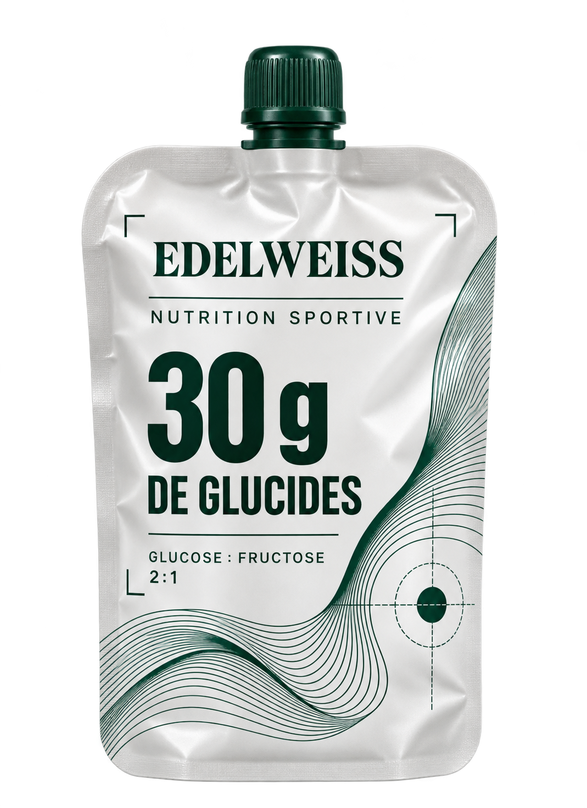
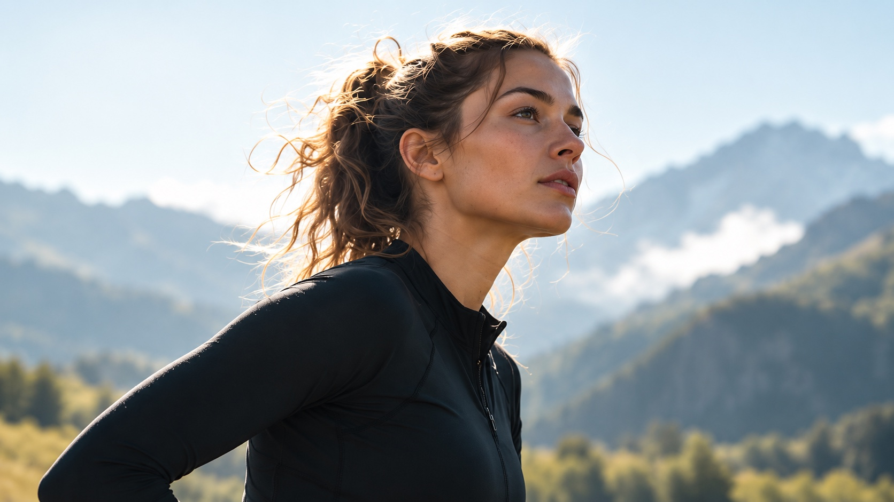
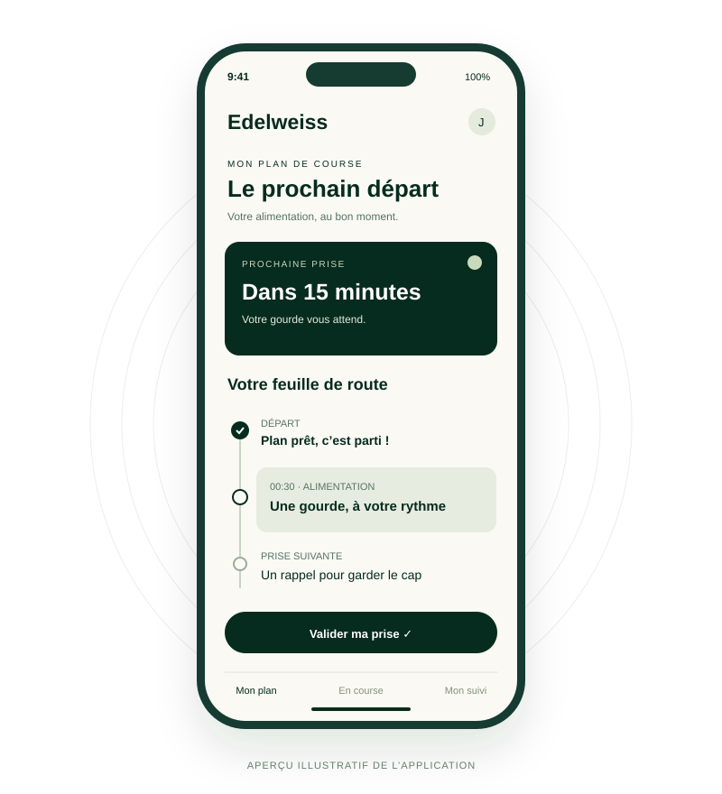
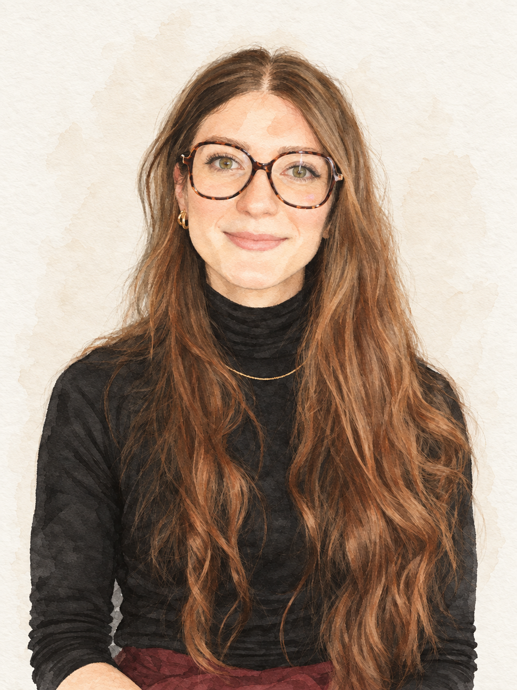

La lassitude alimentaire
Monotonie des goûts et textures, perte d'appétit, voire écœurement.
NUTRITION À L'EFFORT
Des produits pensés pour vous donner envie de manger, une application pour vous aider à ne pas oublier de le faire. Edelweiss repense la nutrition en trail pour vous accompagner jusqu'au bout de vos efforts.
Participer à l'aventure →Formules en développement.

Facile à consommer30 g de glucides/ portionRatio 2 glucoses pour 1 fructose

NOTRE APPROCHE
On peut avoir bien préparé sa course et pourtant, une fois sur les sentiers, l'alimentation ne se passe pas toujours comme prévu. Entre ce qu'on prévoit de manger et ce qu'on parvient réellement à consommer, il y a parfois un monde.
Monotonie des goûts et textures, perte d'appétit, voire écœurement.
Inconforts qui compliquent la poursuite des apports.
Fatigue mentale et perte de notion du temps qui conduisent à manquer des prises.
Pour faciliter l'alimentation pendant l'effort, il est essentiel de prendre en compte les différentes difficultés rencontrées par les sportifs.
Une bonne stratégie nutritionnelle ne repose pas uniquement sur le choix des produits consommés. Elle doit aussi tenir compte du plaisir de manger, de la tolérance digestive et de la régularité des prises.
C'est cette vision qui guide notre approche de la nutrition en trail.
NOS SOLUTIONS
Des produits gourmands et pratiques, pensés pour diversifier votre alimentation pendant l'effort et vous aider à conserver le plaisir de manger.

Préparez votre plan alimentaire, recevez des rappels pendant votre course et suivez vos prises pour mieux respecter votre stratégie nutritionnelle.
SIMPLIFIER LA NUTRITION
La nutrition joue un rôle essentiel dans la pratique sportive, particulièrement pendant l'effort. Nous pensons donc qu'elle doit être accessible à tous, quels que soient son niveau de pratique et ses connaissances.
C'est pourquoi nous souhaitons rendre les connaissances scientifiques plus faciles à comprendre, développer des produits pratiques et agréables à consommer, et proposer des outils concrets pour faciliter la gestion de son alimentation autour de la pratique sportive.
Notre ambition : donner à chacun les moyens de faire des choix éclairés et de mettre en place une alimentation adaptée à ses besoins, en toute simplicité.
NOS ENGAGEMENTS
Notre ambition : développer des shots qui trouvent leur place dans une vie active, avec une attention portée aux ingrédients et une information compréhensible.
Pas besoin de viser un podium pour vouloir faire des choix éclairés.
Construire cette approche avec nous ↗NOTRE HISTOIRE
Faire se rencontrer le sport et la naturalité dans un petit format.
Edelweiss prend forme autour de quatre moments de la pratique sportive. Aujourd’hui, le projet se construit : vos habitudes, vos attentes et vos choix vont nous aider à préciser la gamme.
Le prochain chapitre, on aimerait l’écrire avec vous.
Edelweiss
CONSTRUIRE ENSEMBLE
Un shot vous donne envie ? Dites-nous lequel, votre budget et si vous envisageriez de l’acheter.
Étude d’intérêt · Aucun achat ni paiement.
Prix et compositions encore à définir.